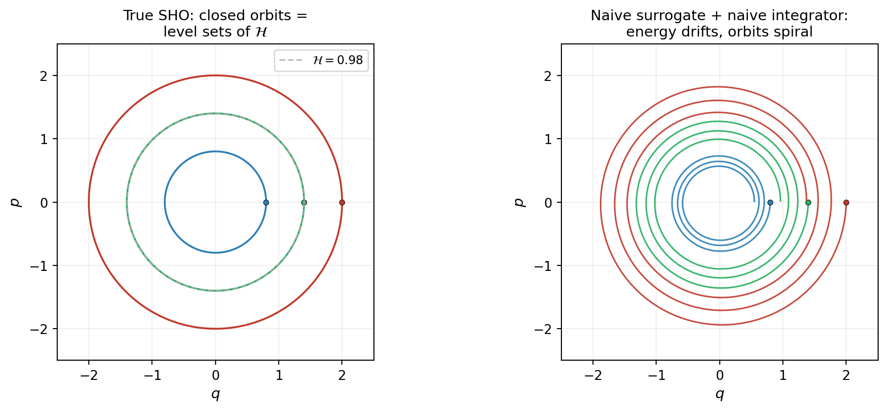
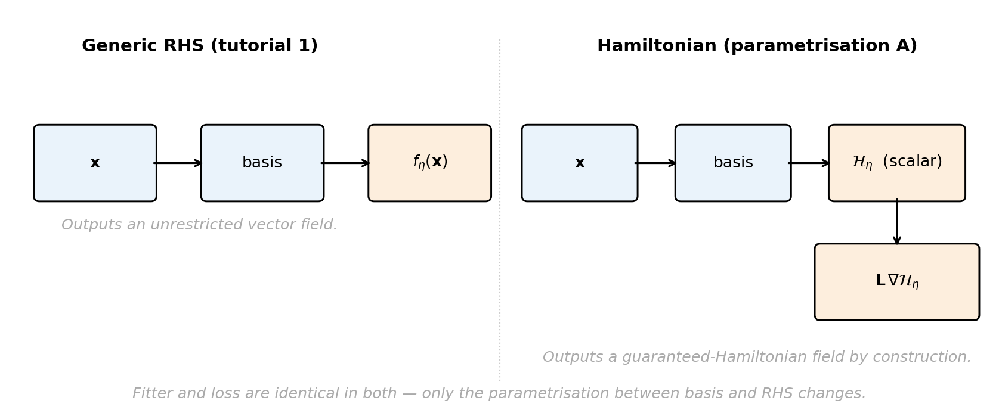
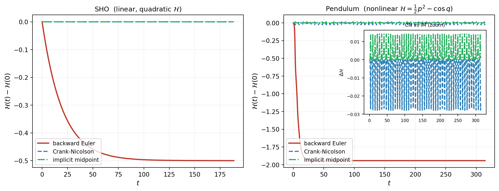
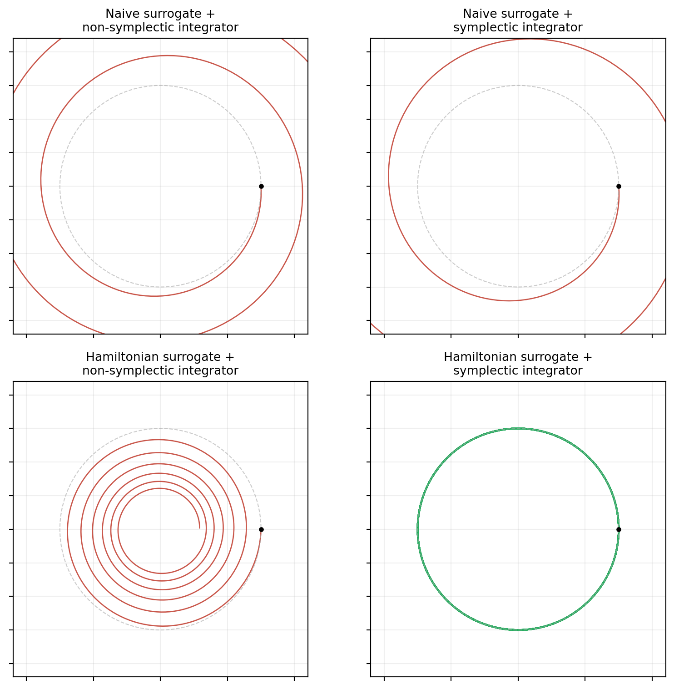

Hamiltonian Systems and Structure-Preserving Surrogates
PyApprox Tutorial Library
Learning Hamiltonian dynamical systems by parametrizing the Hamiltonian itself, preserving energy conservation by construction.
Learning Objectives
After completing this tutorial, you will be able to:
- Define a Hamiltonian system and identify the conserved quantity (energy)
- Recognize phase-space volume preservation and energy conservation as the structure that distinguishes Hamiltonian dynamics from generic ODEs
- Explain why naive right-hand-side learning loses these conservation properties even when residuals are small
- Describe PyApprox’s two structure-preserving parametrizations: learn \(\mathcal{H}_\params\) with fixed structure \(\mt{L}\), or learn structure \(\mt{L}_\params\) with fixed \(\mathcal{H}\)
- Identify when integrator choice matters: a structure-preserving surrogate paired with a non-symplectic integrator still loses energy at the integrator’s rate
Prerequisites
This tutorial specializes Learning Dynamical Systems to systems with a particular kind of mathematical structure — Hamiltonian structure — and shows what is gained by building that structure into the surrogate parametrization rather than discovering it from data. The general dynamical-systems concepts (snapshot pairs, derivative matching, the learn-then-integrate architecture) carry over unchanged.
When Generic RHS Learning Is Not Enough
In Learning Dynamical Systems we framed the problem as learn the RHS, any RHS — the snapshot data constrains \(f_\params\), the basis ansatz interpolates between snapshots, and integration produces predicted trajectories. Many physical systems carry additional structure that this framing discards.
Consider the simplest possible example: a planet orbiting the Sun. The total energy — kinetic plus gravitational potential — is conserved exactly for all time. A naive RHS surrogate fitted to a few observed orbital arcs has small snapshot residuals, predicts the next few orbits reasonably well, and then, over a thousand orbital periods, slowly drifts. The planet spirals inward or outward not because the residuals at fit time were large but because energy conservation was never built into the surrogate.
Hamiltonian systems are the canonical class where this matters. They appear throughout classical mechanics (orbital dynamics, rigid bodies, coupled oscillators), fluid dynamics (point-vortex models, ideal MHD), and parts of plasma physics. PyApprox’s structure-preserving surrogates let you build energy conservation in by design, so that long-time predictions retain the qualitative behavior the dynamics demand.
What a Hamiltonian System Is
A canonical Hamiltonian system has state \(\inputs = (\mathbf{q}, \mathbf{p}) \in \Reals{2n}\) partitioned into coordinates \(\mathbf{q}\) and conjugate momenta \(\mathbf{p}\). Dynamics are generated by a scalar Hamiltonian \(\mathcal{H}(\mathbf{q}, \mathbf{p})\) — usually interpretable as total energy — via Hamilton’s equations:
\[ \dot{\mathbf{q}} = \pd{\mathcal{H}}{\mathbf{p}}, \qquad \dot{\mathbf{p}} = -\pd{\mathcal{H}}{\mathbf{q}}. \tag{1}\]
Equivalently, stacking \(\mathbf{q}\) and \(\mathbf{p}\) into a single state vector,
\[ \dot{\inputs} = \mt{J}\, \nabla \mathcal{H}(\inputs), \qquad \mt{J} = \begin{pmatrix} \mathbf{0} & \IdentMat \\ -\IdentMat & \mathbf{0} \end{pmatrix}, \tag{2}\]
where \(\mt{J}\) is the canonical skew-symmetric matrix. More generally, a noncanonical Hamiltonian system replaces \(\mt{J}\) with an arbitrary skew-symmetric matrix \(\mt{L}\):
\[ \dot{\inputs} = \mt{L}\, \nabla \mathcal{H}(\inputs). \tag{3}\]
This generalization is necessary for rigid-body rotation (Euler equations), point-vortex dynamics, and several plasma models. Two concrete canonical examples we return to below:
- Simple harmonic oscillator (SHO): \(\mathcal{H}(q, p) = \tfrac12 p^2 + \tfrac12 \omega^2 q^2\), giving \(\dot q = p,\ \dot p = -\omega^2 q\). Linear in the state; \(\mathcal{H}\) is quadratic.
- Pendulum: \(\mathcal{H}(q, p) = \tfrac12 p^2 - \cos q\), giving \(\dot q = p,\ \dot p = -\sin q\). Nonlinear in \(q\); \(\mathcal{H}\) is non-polynomial.
Both have \(\mathcal{H}\) exactly constant along trajectories.
Why Structure Matters: Two Conservation Properties
Two consequences of Equation 3 distinguish Hamiltonian dynamics from generic ODEs, both essential for long-time prediction.
Energy conservation. Along any trajectory,
\[ \frac{d\mathcal{H}}{dt} = \nabla \mathcal{H} \cdot \dot{\inputs} = \nabla \mathcal{H} \cdot \mt{L}\, \nabla \mathcal{H} = 0, \tag{4}\]
since the quadratic form \(\vc{v}^\top \mt{L} \vc{v}\) vanishes for any skew-symmetric \(\mt{L}\). The Hamiltonian is an exact invariant of the flow.
Phase-space volume preservation (Liouville’s theorem). The flow preserves the symplectic 2-form \(\omega = \sum_i dq_i \wedge dp_i\). The notation \(dq_i \wedge dp_i\) is a wedge product — an antisymmetric product of coordinate differentials that measures oriented area in the \((q_i, p_i)\) plane. Antisymmetry means \(dq \wedge dp = -dp \wedge dq\) (swapping the two factors flips the sign, i.e. the orientation) and \(dq \wedge dq = 0\) (a form wedged with itself vanishes). Preserving \(\omega\) therefore means that the flow preserves oriented area in every conjugate pair simultaneously. Equivalently, the Jacobian of the time-\(T\) flow map has determinant 1: a small cloud of nearby initial conditions retains its volume forever, never contracting toward an attractor and never expanding without bound. This property is what gives Hamiltonian systems their characteristic phase-space-filling behavior.
Neither property is a consequence of any individual snapshot pair: both are structural features of the equations themselves. A naive RHS surrogate fitted to snapshots has no mechanism to enforce them.
What Naive RHS Learning Loses
Tutorial 1’s framework parametrizes the RHS directly: \(f_\params(\inputs)\) as a generic polynomial. For a Hamiltonian system this parametrization is structurally agnostic — nothing in the form of \(f_\params\) enforces
\[ f_\params(\inputs) = \mt{L}\, \nabla \mathcal{H}_\params(\inputs) \quad \text{for some } \mathcal{H}_\params. \]
The fitted \(\params^*\) produces a vector field that approximately matches the snapshot data, but generically
- \(\nabla \cdot f_{\params^*} \neq 0\), so phase-space volume is not preserved;
- \(f_{\params^*}\) is not even a Hamiltonian vector field — it does not lie in the image of \(\mt{L} \nabla\) for any scalar \(\mathcal{H}_\params\);
- long-time integration drifts in any candidate \(\mathcal{H}\).
Constraints can be enforced in two ways. Soft penalties (regularization terms in the loss) reduce drift but add hyperparameters and never guarantee exact conservation. Structural parametrization restricts \(f_\params\) to the manifold of Hamiltonian vector fields by construction — no penalty term, no tuning, exact conservation by design. PyApprox uses the parametrization approach.
Two Hamiltonian Parametrizations in PyApprox
PyApprox supports two structure-preserving parametrizations, corresponding to two assumptions about what is known a priori and what is to be learned from snapshots.
Parametrization A — learn the Hamiltonian, fix the structure. When \(\mt{L}\) is known (e.g. canonical \(\mt{J}\) for classical mechanics), learn a scalar Hamiltonian:
\[ f_\params(\inputs) = \mt{L}\, \nabla \mathcal{H}_\params(\inputs). \tag{5}\]
\(\mathcal{H}_\params\) is a scalar basis expansion (nqoi = 1); the surrogate’s RHS is \(\mt{L}\) times its gradient. This is exactly the Hamiltonian form by construction. PyApprox implements this as FixedPoissonVariableHamiltonianSurrogate. The fitted coefficients \(\params^*\) define a scalar function whose gradient field is automatically Hamiltonian.
Parametrization B — fix the Hamiltonian, learn the structure. When \(\mathcal{H}\) is known but the Poisson structure \(\mt{L}\) is not (rarer, but appears in noncanonical systems where physical insight provides an energy expression but the algebraic structure must be inferred), learn a skew-symmetric matrix:
\[ f_\params(\inputs) = \mt{L}_\params\, \nabla \mathcal{H}(\inputs), \tag{6}\]
with \(\mt{L}_\params\) constrained skew-symmetric. PyApprox implements this as VariablePoissonFixedHamiltonianSurrogate. The skew-symmetry constraint is enforced by the parametrization: \(\mt{L}_\params\) is built from \(n(n-1)/2\) free upper-triangular entries with the lower triangle set as their negatives.
In both cases the parametrization enforces \(f = \mt{L} \nabla \mathcal{H}\) structurally — no penalty term, no constraint optimization. The loss is still standard derivative matching (or trajectory matching), and the snapshot data is the same as in the generic case. Only the form of \(f_\params\) changes.

Why Integrator Choice Also Matters
A structure-preserving surrogate is only half of what’s required for energy-conserving long-time prediction. The fitted \(f_\params = \mt{L} \nabla \mathcal{H}_\params\) is continuously energy-preserving: by Equation 4, \(d\mathcal{H}_\params/dt = 0\) along the continuous trajectory. But the user never integrates the continuous trajectory; they integrate a discrete-time approximation. Whether the discrete trajectory preserves \(\mathcal{H}_\params\) depends on the integrator.
PyApprox’s implicit steppers fall into three categories with qualitatively different long-time behavior on Hamiltonian systems:
- Backward Euler (first order, A-stable, dissipative): introduces artificial numerical damping. \(\mathcal{H}_\params\) decreases monotonically along the discrete trajectory. The dissipation is entirely integrator-induced; the underlying surrogate is exactly energy-preserving.
- Crank-Nicolson (second order, A-stable): exactly preserves \(\mathcal{H}_\params\) when \(\mathcal{H}_\params\) is quadratic in the state (SHO, harmonic networks, linear systems). For nonlinear \(\mathcal{H}_\params\) (pendulum, anharmonic oscillators, learned polynomial Hamiltonians of degree \(\geq 3\)), \(\mathcal{H}_\params\) drifts — slowly, but with a secular trend that accumulates over time.
- Implicit midpoint (second order, A-stable, symplectic): exactly preserves \(\mathcal{H}_\params\) for any smooth Hamiltonian, modulo round-off. Symplectic integrators preserve the symplectic 2-form of the discrete flow, which implies bounded energy oscillation around the true value for all time, with amplitude \(O(\deltat^2)\) that does not grow secularly.

The lesson: structure preservation in the surrogate buys nothing for long-time prediction if the integrator dissipates it away. Crank-Nicolson is the right default for linear Hamiltonians (SHO, linear coupled systems); implicit midpoint is the right choice for nonlinear Hamiltonians.
The Full Story: Surrogate Structure plus Integrator Structure
Conservation requires both halves to align. The table below summarizes the four-cell matrix of surrogate parametrization crossed with integrator choice:
| Surrogate | Integrator | Energy behavior |
|---|---|---|
| Generic RHS (tutorial 1) | Any | Drifts: \(f_\params^*\) is not Hamiltonian |
| Hamiltonian (tutorial 5) | Backward Euler | Drifts: dissipative integrator |
| Hamiltonian | Crank-Nicolson | Exact for quadratic \(\mathcal{H}\); drifts for nonlinear |
| Hamiltonian | Implicit midpoint | Exact for any smooth \(\mathcal{H}\) |
The framework provides Hamiltonian parametrizations; the integrator must be chosen to match the form of the learned Hamiltonian.

When Hamiltonian Learning Is the Right Tool
Hamiltonian learning is the right tool when:
- The system is genuinely Hamiltonian, or close enough that a Hamiltonian approximation captures the dominant physics (small dissipation, weakly forced systems where the conservative dynamics dominate over short to moderate time scales).
- Long-time prediction matters. Energy and phase-space drift over many periods is a real cost when the prediction horizon is many natural oscillation periods or many orbital periods.
- \(\mt{L}\) or \(\mathcal{H}\) is known a priori from physics. Classical mechanics gives canonical \(\mt{J}\) for free; problems where \(\mathcal{H}\) is known from physical reasoning but \(\mt{L}\) is to be inferred are rarer but real.
It is not the right tool when:
- The system has substantial dissipation. Most real engineering systems (vehicles, structures, control systems, biological systems) have meaningful damping. A naive RHS surrogate is more honest because the damping is physical, not artifactual.
- Only short-time prediction is needed. The benefit of Hamiltonian parametrization is most visible over many periods. Over a few periods, a good generic RHS surrogate is competitive.
- Neither \(\mt{L}\) nor \(\mathcal{H}\) is known structurally. Beyond PyApprox’s current support, metriplectic systems — which combine conservative Hamiltonian dynamics with separate dissipative dynamics in a structured way — are an active research direction. PyApprox’s encoder and learned-function infrastructure is being developed with this extension in mind.
Summary
Hamiltonian systems are characterized by a scalar conserved quantity \(\mathcal{H}\) (the Hamiltonian, usually energy) and a skew-symmetric Poisson structure matrix \(\mt{L}\). The combination \(\dot{\inputs} = \mt{L} \nabla \mathcal{H}\) enforces energy conservation and phase-space volume preservation continuously.
PyApprox provides two structure-preserving surrogate parametrizations:
FixedPoissonVariableHamiltonianSurrogate— learn \(\mathcal{H}_\params\), fix \(\mt{L}\).VariablePoissonFixedHamiltonianSurrogate— learn \(\mt{L}_\params\), fix \(\mathcal{H}\).
In both cases the parametrization enforces Hamiltonian structure by construction. No penalty terms, no constraint optimization.
Conservation in the discrete trajectory requires the integrator to be chosen to match the form of \(\mathcal{H}_\params\):
- Backward Euler: dissipative, drifts.
- Crank-Nicolson: exact for quadratic \(\mathcal{H}_\params\), drifts for nonlinear.
- Implicit midpoint: exact for any smooth \(\mathcal{H}_\params\).
Pair Hamiltonian surrogates with symplectic integrators. Mismatching loses the long-time benefit the parametrization was designed to provide.
The next tutorial, Learning Hamiltonians, realizes both parametrizations concretely. It walks through learning \(\mathcal{H}_\params\) for the simple harmonic oscillator with FixedPoissonVariableHamiltonianSurrogate, learning the Poisson structure \(\mt{L}_\params\) with VariablePoissonFixedHamiltonianSurrogate on a linear 4D system, and comparing integrator choices to confirm the predictions of this concept tutorial.
References
- Hairer, E., Lubich, C., & Wanner, G. (2006). Geometric Numerical Integration: Structure-Preserving Algorithms for Ordinary Differential Equations (2nd ed.). Springer. A reference for symplectic integrators and structure-preserving numerical methods; covers Hamiltonian systems, symplectic Runge-Kutta methods, and long-time error analysis.
- Greydanus, S., Dzamba, M., & Yosinski, J. (2019). Hamiltonian neural networks. Advances in Neural Information Processing Systems 32. Introduces the scalar-Hamiltonian parametrization used here (with a neural-network \(\mathcal{H}_\params\) instead of a basis expansion) and demonstrates long-time energy conservation gains over generic RHS networks.
- Gruber, A., & Tezaur, I. (2023). Canonical and noncanonical Hamiltonian operator inference. Computer Methods in Applied Mechanics and Engineering. Develops the canonical and noncanonical Hamiltonian operator-inference framework on which PyApprox’s Hamiltonian surrogates are based.